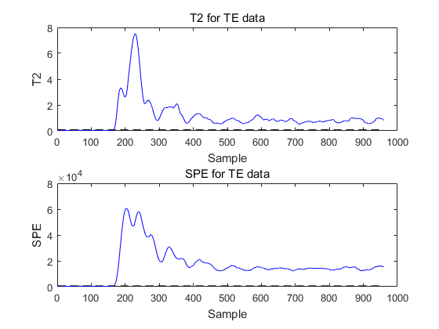

Contents
tic
close;
clear all;
load normal data and testing data and scaling by zscore
happen=160;
d00=importdata('d00.dat');
d01=importdata('d01_te.dat');
X=d00';
XT=d01;
[X,mean,std]=zscore(X);
XT=(XT-ones(size(XT,1),1)*mean)./(ones(size(XT,1),1)*std);
Augmented Matrices for training and testing
for i = 17 : size(X,1)
tdX{i} = X(i-16:i,:);
end
for i =1 : 16
tdX{i} = tdX{i+16};
end
for i = 17 : size(XT,1)
tdXT{i} = XT(i-16:i,:);
end
for i =1 : 16
tdXT{i} = tdXT{i+16};
end
summ = 0;
for j = 1 : size(X,1)
TempX = tdX{j};
MatXX(:,:,j) = TempX;
summ = summ + TempX;
end
Mm = summ/size(X,1);
for i =1 : length(tdX)
tdX{i} = tdX{i}-Mm;
end
for i = 1 : length(tdXT)
tdXT{i} = tdXT{i}-Mm;
end
for j = 1 : size(X,1)
TempX = tdX{j};
MatXX(:,:,j) = TempX;
VecXX(j,:) = reshape(TempX,1,52*17);
end
Dis = pdist2(VecXX,VecXX);
options = [];
option.t = 1/size(X,1)^2 * sum(sum(Dis));
options.NeighborMode = 'KNN';
options.k = 20;
options.WeightMode = 'HeatKernel';
Compute the similarity
W = myConstructW(VecXX,20,1);
tempD = sum(W,2);
D_sqrt = (diag(1./sqrt(tempD)));
Perform 2D graph embedding
[U, V, eigvalue_U, eigvalue_V, posIdx, Y] = TensorLPP(MatXX, W, options);
PL=U(:,1:16);
PR=V(:,1:45);
St = zeros(size(PL'*Mm*PR,2));
for j = 1 : size(X,1)
St = St + (PL'*(tdX{j} - Mm)*PR)'*(PL'*(tdX{j} - Mm)*PR);
end
[V,D] = eig(St);
P=PR;
St2 = zeros(size((PL'*Mm*PR)',2));
for j = 1 : size(X,1)
St2 = St2 + (PL'*(tdX{j} - Mm)*PR)*(PL'*(tdX{j} - Mm)*PR)';
end
[V2,D2] = eig(St2);
Q = PL;
for i=1:size(X,1)
t2(i)=norm(Q'*(tdX{i})*P*pinv(D)*P'*(tdX{i})'*Q,'fro');
t2(i)=norm(P'*(tdX{i})'*Q*pinv(D2)*Q'*(tdX{i})*P,'fro');
SPE(i) = norm( (tdX{i}-Q*Q'*tdX{i}*P*P')*(tdX{i}-Q*Q'*tdX{i}*P*P')','fro');
end
for i=1:size(XT,1)
XTt2(i)=norm(Q'*(tdXT{i})*P*pinv(D)*P'*(tdXT{i})'*Q,'fro');
XTt2(i)=norm(P'*(tdXT{i})'*Q*pinv(D2)*Q'*(tdXT{i})*P,'fro');
XTSPE(i) = norm( (tdXT{i}-Q*Q'*tdXT{i}*P*P')*(tdXT{i}-Q*Q'*tdXT{i}*P*P')','fro');
end
Compute Control limit of SPE and T2
[bandwidth,density,xmesh,cdf]=kde(t2);
r=0.99;
for i=1:size(cdf,1),
if cdf(i,1)>=r,
break;
end;
end;
T2limit=xmesh(i);
[bandwidth,density,xmesh,cdf]=kde(SPE);
r=0.99;
for i=1:size(cdf,1),
if cdf(i,1)>=r,
break;
end;
end;
SPElimit= xmesh(i);
Plot the results
figure(11)
subplot(2,1,1);
plot(1:happen,XTt2(1:happen),'b',happen+1:size(XTt2,2),XTt2(happen+1:end),'b');
hold on;
TS=T2limit*ones(size(XT,1),1);
plot(TS,'k--');
title('T2 for TE data');
xlabel('Sample');
ylabel('T2');
hold off;
subplot(2,1,2);
plot(1:happen,XTSPE(1:happen),'b',happen+1:size(XTSPE,2),XTSPE(happen+1:end),'b');
hold on;
S=SPElimit*ones(size(XT,1),1);
plot(S,'k--');
title('SPE for TE data');
xlabel('Sample');
ylabel('SPE');
hold off;
falseT2=0;
falseSPE=0;
for wi=1:happen
if XTt2(wi)>T2limit
falseT2=falseT2+1;
end
falserate_pca_T2=100*falseT2/happen;
if XTSPE(wi)>SPElimit
falseSPE=falseSPE+1;
end
falserate_pca_SPE=100*falseSPE/happen;
end

Miss alarm rate and False alarm rate
missT2=0;
missSPE=0;
for wi=happen+1:size(XTt2,2)
if XTt2(wi)<T2limit
missT2=missT2+1;
end
if XTSPE(wi)<SPElimit
missSPE=missSPE+1;
end
end
missrate_pca_T2=100*missT2/(size(XTt2,2)-happen);
missrate_pca_SPE=100*missSPE/(size(XTt2,2)-happen);
disp('----False alarm rate----');
falserate_pca=[falserate_pca_T2 falserate_pca_SPE]
disp('----Miss alarm rate----');
missrate_pca=[missrate_pca_T2 missrate_pca_SPE]
----False alarm rate----
falserate_pca =
0 0
----Miss alarm rate----
missrate_pca =
0.7500 0.7500
Detection time
i1=happen+1;
while i1<=size(X,1)
T2_mw(i1,:)=XTt2(1,i1:(i1+5))-T2limit*ones(1,6);
flag1=0;
for j1=1:6
if T2_mw(i1,j1)<0
flag1=1;
i1=i1+j1;
break;
end
end
if flag1==0
detection_time_T2=i1;
break;
end
end
i2=happen+1;
while i2<=size(X,1)
SPE_mw(i2,:)= XTSPE(1,i2:(i2+5))-SPElimit*ones(1,6);
flag2=0;
for j2=1:6
if SPE_mw(i2,j2)<0
flag2=1;
i2=i2+j2;
break;
end
end
if flag2==0
detection_time_SPE=i2;
break;
end
end
detection_time_T2
detection_time_SPE
runtime=toc
detection_time_T2 =
167
detection_time_SPE =
167
runtime =
122.6390